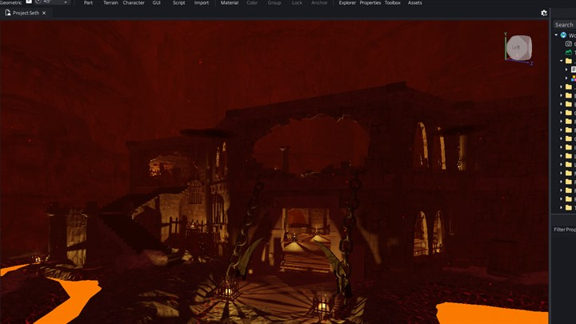

Project Seth Project Seth
Bản thử nghiệm thiết kế môi trường 3D và ánh sáng thể tích trên Roblox Studio (dự án đã ngừng phát triển). Nghiên cứu không gian đền thờ ngầm, buồng dung nham và cổng phát sáng huyền bí. 3D environmental level design and volumetric lighting prototype crafted in Roblox Studio (discontinued). An architectural study of subterranean temple ruins, molten lava chambers, and radiant rift portals.

Thư viện hình ảnh Visual gallery

Đại điện ngục tối và hồ nham thạch: Bố cục không gian pháo đài ngầm, hệ thống lồng treo và ánh sáng thể tích tương phản cao. Infernal Citadel & Lava Pools: Subterranean fortress layout, suspended cages, and high-contrast volumetric ambient lighting.
Đúc kết & Trải nghiệm Retrospective & Takeaways
Ánh sáng & Không khí Lighting & Mood
Sử dụng Future Lighting trên Roblox Studio để tạo độ tương phản sâu giữa ánh sáng lạnh từ đá đen ngầm và sắc cam rực cháy từ hồ dung nham và đuốc than. Leveraged Roblox Future Lighting to establish deep contrast between cold subterranean basalt masonry and fiery amber illumination from lava chambers and braziers.
Cấu trúc Modular & Tỷ lệ Modular Kitbashing & Scale
Xây dựng hệ thống vòm cột, xích sắt và sàn đá có thể tái sử dụng, đồng thời luôn đặt Dummy nhân vật chuẩn để kiểm soát tỷ lệ không gian thực tế. Engineered reusable arches, colonnades, and suspended chain rigs while keeping a standardized character dummy in-scene for constant human-scale calibration.
Bước đệm chuyển giao Bridge to Unity
Dù dự án dừng lại ở giai đoạn prototype không gian, các kinh nghiệm về phối màu, đổ bóng và thiết kế lối đi đã trở thành nền tảng trực tiếp khi xây dựng tựa game Unity 3D sau này (Light = Die). Although shelved at the spatial prototype phase, the spatial composition, shadow management, and visual pacing lessons directly formed the backbone of later Unity 3D productions like Light = Die.